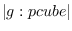

Linux and other UNIX employs the DES (Data Encryption Standard)
to encrypt password strings.
The function is provided in the libcrypt.so library.
lib/llib/crypt.l links this library and provides the following
functions for string encryption.
Note that the  key space of DES is not large enough to
reject challenges by current powerful computers. Note also
that only the encrypting functions are provided and no
rational decrypting is possible.
crypt str salt [function]
-
-
The raw function provided by libcrypt.so.
Str is encrypted by using the salt string.
Salt is a string of two characters, and used to randamize
the output of encryption in 4096 ways.
The output string is always 13 characters regardless to the
length of str.
In other words, only the first eight characters from str
are taken for encryption, and the rest are ignored.
The same string encrypted with the same salt is the same.
The same string yields different encryption result
with different salts.
The salt becomes the first two characters of the resulted
encrypted string.
rcrypt str &optional (salt (random-string 2)) [function]
-
-
The plain string, str, is converted into its encrypted
representation. The salt is randomly generated if
not given.
random-string len &optional random-string [function]
-
-
This is a utility function to generate a random string
which constitutes of elements in the random-string.
By default, "A-Za-z0-9/." is taken for the random-string.
In order not to make mistakes between i, I, l, 1, O, 0, and o,
you can specify *safe-salt-string* for the random-string.
compcrypt input cryption [function]
-
-
Input is a plain string and cryption is a encrypted
string. Input is encrypted with the salt found in the cryption
and the result is compared with it. If both are the same,
T is returnd, NIL, otherwise.
2016-03-23